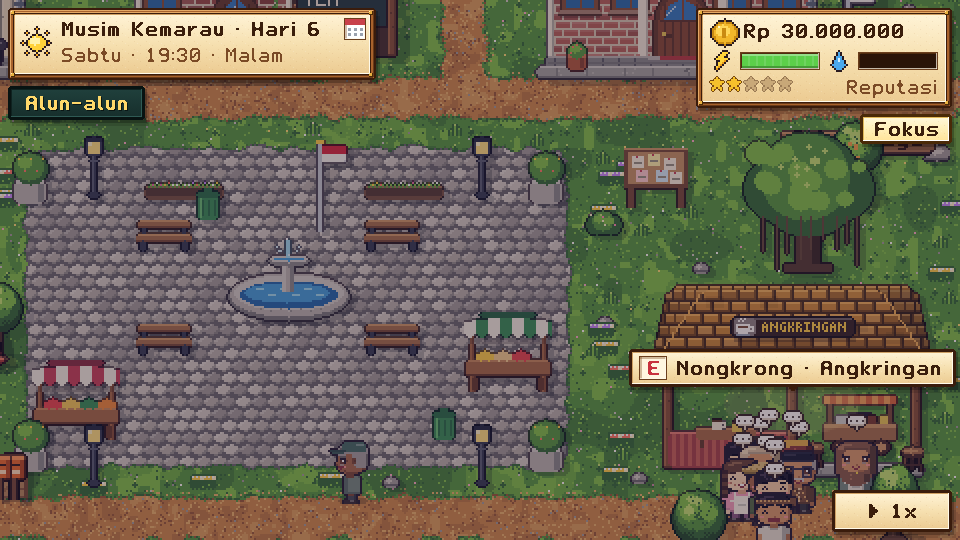
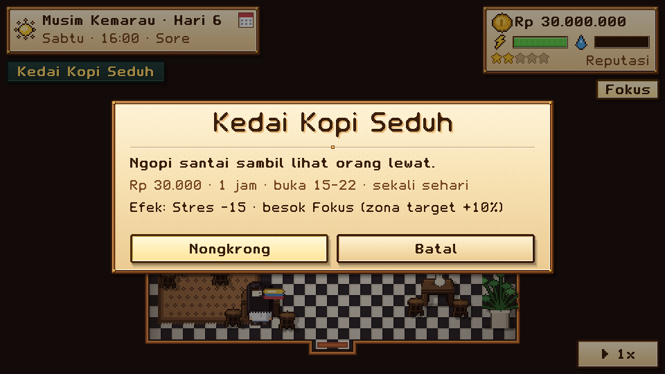
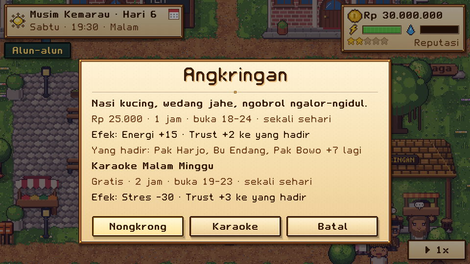
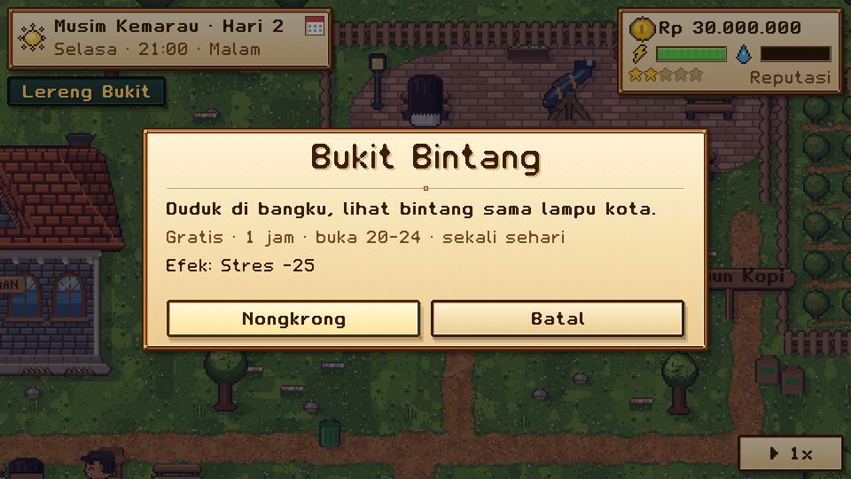
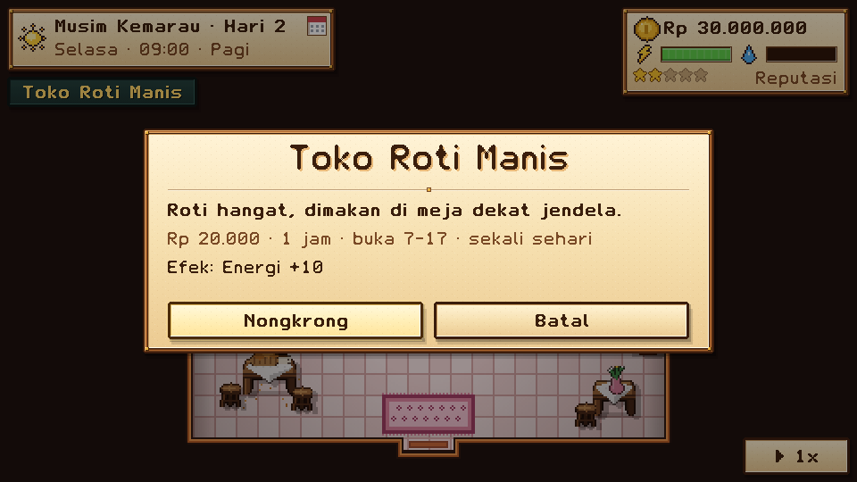
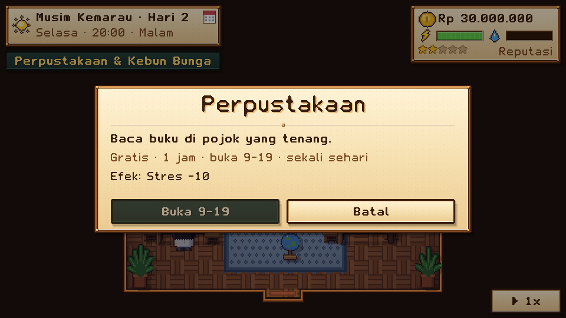
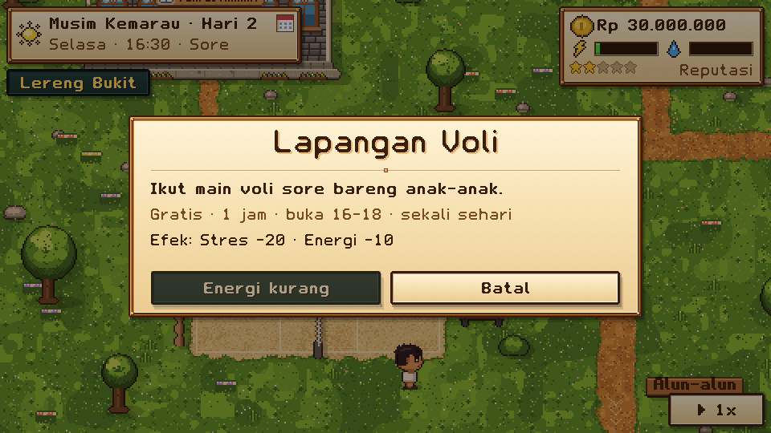
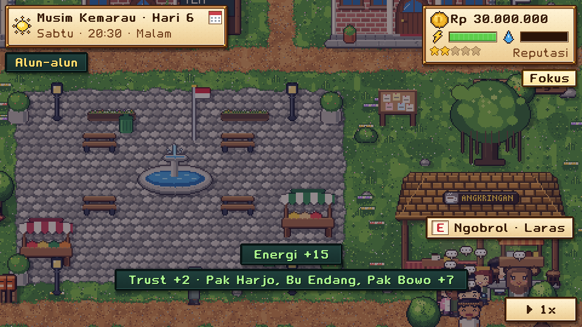

Senyum Rimbasari · Draf Visual v3 · Nongkrong (Fase 3a-3)
ACC user 2026-11-15 ("ACC, kerjakan"), sudah dipasang di game. Usulan 3a-3 sudah di-ACC ("usulan 3a-3 acc"). Halaman ini menunjukkan tampilan panel nongkrong dan chip Fokus di HUD. Semua gambar diambil langsung dari game (?uji=klinik2), panel memakai mesin panel HD yang sudah dipakai di Renovasi/Upgrade. Efeknya belum dipasang; ditulis setelah ACC.
1. Titik nongkrong & prompt E

| Tempat | Titik E |
|---|---|
| Kedai Kopi Seduh | Depan salah satu dari 3 meja bundar |
| Angkringan / Karaoke | Depan gerobak, menghadap atas |
| Lapangan Voli | Di dalam lapangan |
| Bukit Bintang | Depan salah satu dari 4 bangku |
| Perpustakaan | Depan salah satu dari 2 meja baca |
| Toko Roti Manis | Depan etalase roti (kasir Kak Tari tetap untuk ngobrol) |
2. Panel nongkrong




3. Tombol mati


4. Setelah nongkrong

Yang perlu kamu review:
- Panel (isi baris, ukuran, tombol) dan tombol mati dengan alasan.
- Chip Fokus di HUD.
- Titik E tiap tempat (tabel di atas). Di Angkringan, menghadap gerobak = nongkrong, selain itu = ngobrol.
- Aturan jam: nongkrong harus selesai sebelum tutup. Jadi Kedai bisa dimulai sampai 21:00, Voli 16:00-17:00, Karaoke 19:00-21:00, Angkringan & Bukit Bintang sampai 23:00 (supaya tidak pingsan lewat 24:00).
- Baris rasa tiap tempat (bahasa lisan, boleh diganti).
- Revisi 2026-11-15: kata "Nongkrong" hanya untuk Kedai, Angkringan, Toko Roti. Tempat lain: Bermain Voli, Melihat Bintang, Membaca, Karaoke (teks E dan tombol).